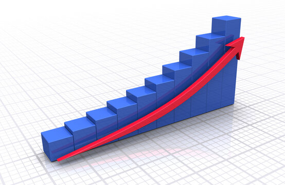
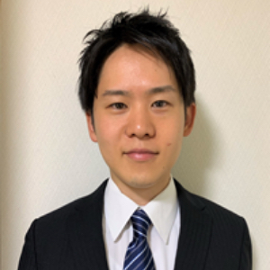

Becoming a "Bridge" for Legacies
Connecting the hopes of owners and employees, and the company's future, into tomorrow through business succession.
We commit fully and responsibly to just one company.
"Wakon" means the spirit of Japan, and "Kakehashi" means a bridge that connects.
We are the bridge — between a company and its future, between employees and their happiness, and between Japan and the world.
Wakon Kakehashi Partners is a "traditional-model" search fund formed by a team of management professionals. We take over just one promising small or medium-sized enterprise and manage it ourselves.
Unlike investment funds that handle multiple companies at once, a search fund focuses entirely on the future of a single company.
Rather than simply "selling" the company, we take on the role of a partner who inherits it together with the vision behind it — managing it with long-term responsibility.
News
Company Profile
Message from the Representative
Career History
- 2016-2024Worked at a management consulting firm (strategy design, M&A, new product/service development, sales & new customer acquisition, overseas expansion, sales process improvement and digitalization, etc.)
- Concurrently worked with local Chambers of Commerce and Industry to support SME management (including junior employee development)
- 2024-2026Earned an MBA from IESE Business School, Spain
(While enrolled, completed internships at the following)- Search fund: sourcing through investment thesis development
- Strategy consulting firm: launch of a new service and related M&A evaluation
- Business succession investment firm: sourcing through investment thesis development at a permanent-capital investment firm
- United Nations new service program: developed a new tourism service concept, awarded 2nd place worldwide
- Aug 2026-Founded Wakon Kakehashi Partners
Company Overview
- Acquiring shares of small and medium-sized enterprises facing succession challenges and taking over their management
- Selecting, investing in, and managing portfolio companies
- Any and all business incidental or related to the above
Our Business
What Is a Search Fund?

A search fund is a mechanism in which an individual aspiring to become a business owner (a "searcher") works with the support of investors to find and take over a company facing a shortage of successors, then grows as its owner-operator.
The model originated at Stanford University in the United States in 1984, and more than 1,200 searchers are already active worldwide, primarily across Europe and the Americas.
In Japan too, as of 2026 roughly 50 searchers in total (10 traditional-model and 40 accelerator-model*) are active, and the industry is gradually expanding.
*The traditional model is an independent approach in which an individual proceeds with the support of multiple investors; the accelerator model refers to proceeding while affiliated with a single sponsoring firm.
Our Value
Business Succession With a Familiar Face
We commit fully and responsibly to just one company.
In business succession led by operating companies or PE funds, it is common for the successor management to be hired only after the deal itself has been decided.
At our firm, our representative, Yoshikawa, personally commits his career as the successor, dedicating himself to the management of a single promising company. We carefully inherit the precious company and the vision the owner has built, and devote ourselves fully to its management.
Management That Plans — and Rolls Up Its Sleeves
We don't just draw up plans — we roll up our sleeves and deliver results ourselves.
Our representative has experience not only in formulating mid-term management plans and launching new businesses, but also in extensive hands-on execution in the field.
Working together with clients on new products we co-developed, we jointly drove sales and generated revenue in the hundreds of millions of yen.
We used IT to improve operating processes across nearly 600 stores in Japan and the U.S., working side by side with local staff through to full adoption, achieving cost savings in the hundreds of millions of yen.
We also supported the management transition of an SME (a caregiving provider) facing a successor shortage, jointly conducting hands-on training for junior employees through to full adoption.
With this end-to-end execution capability, we approach post-succession management standing on the same level as every employee.
New Service Development and Customer Growth

While valuing our existing customers, we build new pillars of revenue.
We have driven new customer acquisition through IT-enabled planning and execution of new products and services, as well as data-driven marketing initiatives.
Building on the trust we have earned with existing customers, we uncover new business opportunities and turn them into real growth in the company's revenue.
Backed by a Team of Diverse Experience
Our firm was established with the backing of 20 supporters (individuals and entities) across six countries. We approach management not as one person alone, but as a team.
Together with professionals from diverse backgrounds — operating companies, investment firms, business owners — each deeply versed in their industry or specialty, we engage as a team with the company the owner has built.
Team (Investors)
Our team is joined by multiple professionals in management and business, finance, and search funds. We face the business together as one team.
International Investors


Japanese Search Fund Investors
Corporates & Professional Firms

Management Experts

Yuki Mizoguchi
Representative Director, Mirai Soushi Inc.